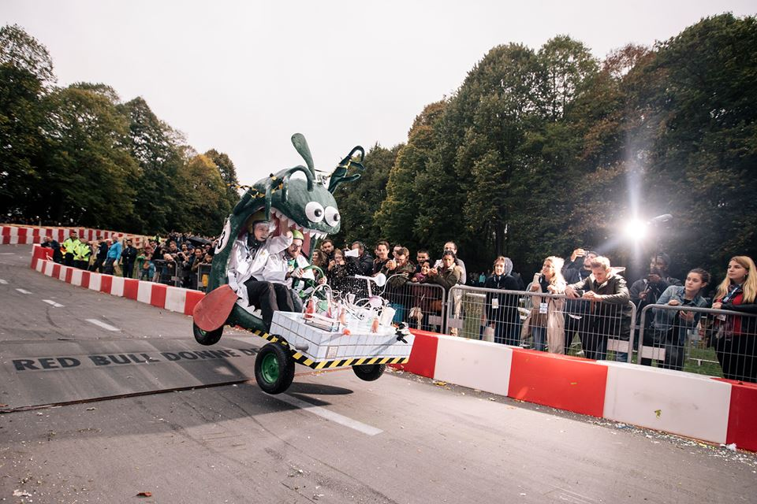

- 1) Les grandes courses:
-
Que serait les caisses à savon sans les courses? La réponse: rien. Et oui, qui dit caisse à savon dit course.
Ces courses sont ouvertes aux amateurs, aux professionnels mais avant tous aux passionnés!
Les fans de ces petits bolides sont prêt à faire des kilomètres juste pour participer à l'une de ces courses folles.
Je vous propose de vous donner un petit apperçut de plusieurs de ces courses et j'espére vous donner envie d'y participer.☻Que serait les caisses à sans les courses? La réponse: rien. Et oui, qui dit caisse à savon dit course.
Ces courses sont de plus en plus populaires et rassemblent de plus en plus de monde que l'on a même créé le championnat de France de cette pratique.
Trêve de bavardage et admiré ces courses:

- 2) Quelques grandes courses
-
Notre bon pays bien aimé qu'est la France est un pays qui s'est s'imposer dans l'organisation de course comme le montre c'est quelques grandes courses de caisse à savon, dont voici un extrait:
- le Trophé du Vercors, course dans le département 38, qui regroupe toutes les courses dans le Vercors
dont la finale à lieu dans la descente du Clos de Balme et est organisé par l'association des Caisses du Vercors.
-Le devil drive, une courses qui regroupe plus de 150 caisses, pilotes et copilotes de plus de 10 pays Européens. Cette course se passe dans la petite commune française de Grouche Luchuel.
-La fameuse course "À fond la caisse...à savon!!" qui réunit les bricoleurs du Dimanche avec bien sur leurs voitures!!!!
- Il ne faut surtout pas oublier le chamionnat d'Europe de course à sason qui se passe à Saint Pierre-de-Bailleu.
Pour vous faire vivre un moment innoubliable je vous propose de suivre une équipe sur l'une de course mythique qu'est la course RedBull de Saint-Cloud qui s'est tenue le Dimanche 1er octobre 2017, pour cela nous suivrons l'équipe:
- 3) Le petit follow
-
Pour vous faire vivre un moment innoubliable je vous propose de suivre une équipe sur l'une de course mythique qu'est la course RedBull de Saint-Cloud qui s'est tenue le Dimanche 1er octobre 2017, pour cela nous suivrons l'équipe:
Cette équipe est Alsacienne a participé à dernière grande course de caisse à savon: la course RedBull. Ils ont dévalé ces quelques Kilométres à bord de leur voiture à l'image de la célèbre BD Kid Paddle, ces alsaciens ont décorés leur voiture à d'un Blurk, monstre des jeux auquels joue le héro de la BD.
L'équipe de la TEAM PANIK AU LABO, composée de 4 membres, a pris le départ de la course en 43ème place et a brillamment finie la course en passant la ligne blanche à place.
On peut dire un grand BRAVO à la TEAM PANIK AU LABO!!!!